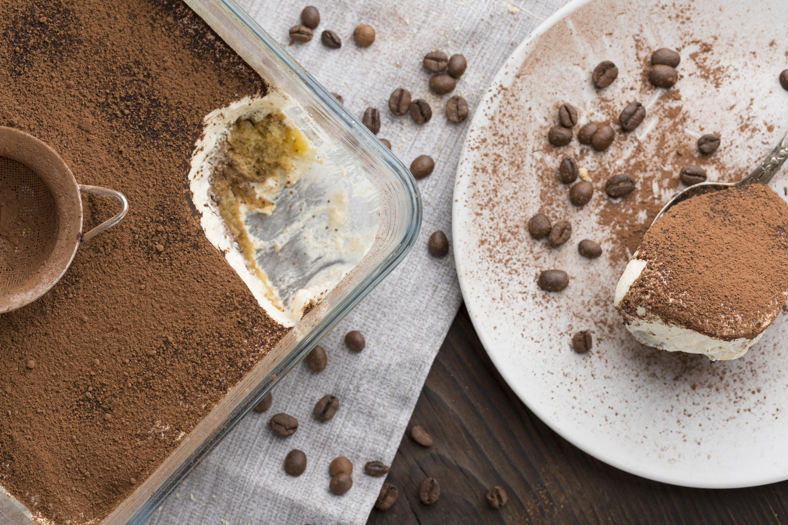

Home
Authentic Tiramisu Recipe

How to make the best homemade tiramisu
On my first trip to Italy in 1995 to meet my husband's family, I didn't speak a word of Italian.
But I did learn how to make great dolci (desserts) from his sister, Maria.
This is her authentic tiramisu recipe, and now they ask me to make it whenever we go back!
Ingredients
- 2 cups brewed espresso, cooled, divided
- ½ cup white sugar
- 3 large eggs, separated, divided
- 2 tablespoons brandy
- 2 (8 ounce) packages mascarpone cheese
- 1 pinch white sugar
- 30 ladyfingers (such as Savoiardi)
- 3 tablespoons unsweetened cocoa powder
Steps
- Beat 1 tablespoon espresso, ½ cup sugar, egg yolks, and brandy together in a bowl with an electric mixer until smooth, 2 to 3 minutes. Beat in mascarpone cheese until well blended, 3 to 5 minutes.
- Beat egg whites and 1 pinch sugar in a separate bowl with an electric mixer until stiff peaks form; gently fold into mascarpone mixture. Set aside.
- Pour remaining espresso into a shallow dish. Dip 1 side of each ladyfinger into espresso; arrange on a serving platter in two horizontal rows of 6 ladyfingers, plus 1 ½ ladyfingers in opposite directions on both ends to form a rectangular shape.
- Spread ½ mascarpone mixture onto ladyfingers; dust with ½ cocoa powder. Top with remaining ½ each ladyfingers dipped in espresso, mascarpone mixture, and cocoa powder.
- Refrigerate tiramisu until ladyfingers have softened, 2 to 3 hours.